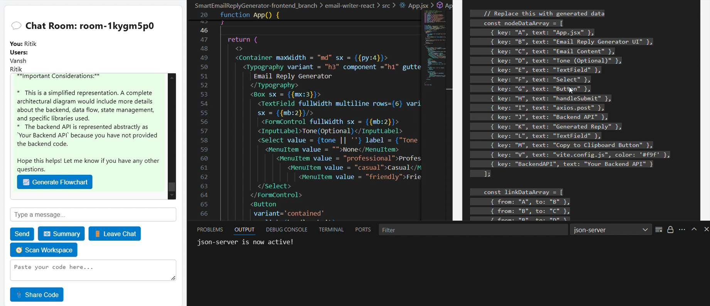

Check out some real-world use cases where RAMU becomes your coding sidekick — saving time, auto-generating charts, and handling reviews like a pro.
Click on Generate Flowchart button
Ramu will create the reactCode and also write on flowchart preview and run that code
Send a block of code in chat. Example:
function add(a, b) { return a + b }
RAMU will analyze it, detect issues, and reply with improvements (e.g., add type checks, handle NaN, etc.). You can directly accept suggestions into your workspace.
Have a team chat in the Room. Then click the üìß icon. RAMU will create a beautiful Agile summary like:
Team: Alpha
- Ritik: Integrated STOMP + backend
- Vansh: Flowchart rendering done
Blockers: None
This can be auto-emailed or downloaded as a text file.
Paste React/JSX components, and RAMU opens them in a syntax-highlighted panel. Perfect for live reviews:
<Button onClick={() => alert('Hello RAMU')}>Click Me</Button>